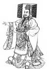

Antik Çin tarihinin önemli figürlerinden biri olan Qin Shihuangdi (MÖ 259-210), tarihte ilk kez Çin’i birleştirmiş olan imparatordur. Çin Seddi’nin inşasına onun döneminde başlanmıştır. Aynı zamanda düşmanlarını canlı canlı gömmesi ile ün kazanmış efsanevi bir tirandır. Söylendiğine göre tüm bunları yüzlerce yıl süren iç savaştan sonra Çin’e düzen ve istikrar getirmek için yapmıştır.

Qin Shihuangdi doğduğu sırada Çin, “savaşan devletler çağı” olarak anılan dönemin sonuna yaklaşmaktaydı. Bölgesel savaş lordları ülkenin kontrolü için birbirleriyle mücadele ediyorlardı. Qin Shihuangdi, yedi krallıktan biri olan Qin Devleti’nin mirasçısıydı. MÖ 246 yılında, henüz 13 yaşındayken Qin Kralı olarak tahta geçti.
MÖ 221 yılında son bağımsız düşman devletini de yenilgiye uğrattı. Kendisini Çin’in ilk imparatoru olarak ilan etti. İmparatorluğu merkezileştirmek için eski feodal devletlerin bütün izlerini yok etti. Asillerin silahlarını topladı, güçlerini etrafında topladıkları kaleleri yıktı. Ülke genelinde para birimini ve hukuk sistemini bir standarda bağladı.
İleride bir tehdit oluşturmasını engellemek için Konfüçyusçuluğu yasakladı. Bu inanç sistemini fikir ayrılıklarına neden olabilecek bir sorun kaynağı olarak görüyordu. İleri gelen Konfüçyusçuları canlı canlı toprağa gömdürdü. Klasik kitapların yakılmasını emretti. Bu girişimi, onun döneminin uzun bir süre için kültürel imha hareketleri ile birlikte anılmasına neden olacaktı.
Çin Seddi’nin inşası sırasında binlerce işçinin hayatını kaybettiği tahmin edilmektedir. Bunun en önemli nedeni kötü çalışma koşullarıydı. Onlar gibi daha niceleri Qin Shihuangdi’nin hırslı projelerinde çalışırken hayatlarını kaybettiler. İmparator yenilgiye uğrattığı devletlerden birinin yandaşlarınca yapılan en az üç suikast girişiminden sağ olarak kurtulmayı başardı.
Ölümünün ardından Konfüçyusçuluğun yasaklanması da dahil olmak üzere pek çok buyruğu geri çekildi. Qin Shihuangdi’nin hükümranlığı kısa sürmüş olsa da, kurduğu imparatorluk 2 bin yıldan daha uzun bir süre boyunca ayakta kalacaktı.
Ek Bilgiler
1- 1974 yılında Çin’in orta kesimlerinde bir grup çiftçi, bir tesadüf sonucu toprağa gömülü binlerce asker, at, savaş arabası ve müzisyen heykeli buldular. Arkeologlar “Terra Cotta Ordusu” adı verilen bu kalıntıların, Qin Shihuangdi’nin mezarının bir parçası olduğuna kanaat getirdiler. Bu heykeller imparatora ölümden sonraki hayatında eşlik edeceklerdi. UNESCO, heykellerin bulunduğu bölgeyi 1987 yılında dünya mirası kapsamına aldı.
2- Çin Seddi sonraki imparatorlar döneminde onarılmış ve genişletilmiştir. Qin Shihuangdi döneminde inşa edilenlerin pek azı ayakta kalabilmiştir. Çin ordusu, duvarı 17. yy’a kadar askeri amaçlar için kullanmaya devam etmiştir.
3- İmparatora karşı düzenlenen suikastlerden birinin hikayesi 2002 yılında filme çekilmiştir. Jet Li’nin (1963-) başrolü oynadığı Hero (Kahraman) adlı film, ABD’de 2004 yılında gösterime girmiştir.